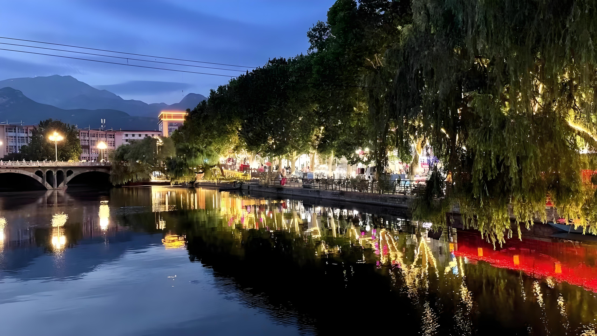

Start where the arches meet the water: the bridge is a natural focal point for photos and a calm crossing between neighborhoods. Follow the tree line—the drooping willows and wrapped lights read like a lit canopy, with red lantern glow near the water’s edge—then pause where reflections run longest and steadiest.
After dark
Modern Tai'an — Riverside Nights
When daylight slips behind the peaks, the city turns to water and light: a stone arch bridge picked out in warm lamps, willows wrapped in gold string lights with red lanterns glinting near the shore, and distant peaks fading into twilight while reflections hold steady on the river.
Along the water
Bridge, willows, and reflected glow
The photograph below is classic riverside Tai'an at blue hour: glass-still water, a multi-arch stone bridge on the left, and a tree-lined walk on the right where warm fairy lights meet pockets of red decorative glow along the bank. Behind the foliage, building roofs catch gold light; far off, mountains sit soft and blue under the sky.

The brightest clusters behind the trees are usually skewers, bubble tea, grilled fish, and regional Shandong small plates. Tea houses and late kitchens fill in for quieter nights; peak summer weekends mean longer queues at the most popular stalls.
Open-air seating and portable speakers add a contemporary layer—sometimes live folk or pop within earshot of the water. Festival weeks (holidays, summer breaks) bring extra lighting and longer hours along the strip.
Ride-hail apps and taxi stands near main intersections are reliable after crowds peak; note earlier last buses on weeknights. Keep to lit paths, watch step edges on older stonework, and carry a light jacket—river air cools fast once the sun is gone.